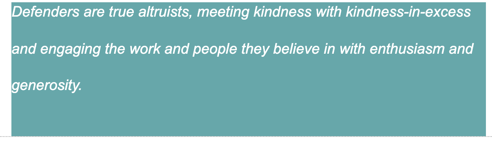

I was helping a mate with their work as a business owner - however after sometime, the help I offered has turned into higher expectations, their situation became even more demanding which required more time and effort from me. During this time, I have always practiced values of empathy and kindness - i.e understanding its a stressful time, give the person benefit of the doubt, happy to be the punching bag etc. As time progresses, I began to question for how long I am willing to go on with this and if I am enabling it, so I decided that to be fair for both of us, its best that they proceed with hiring someone else for that role who can offer more time and effort.
In the end, it worked out better for that person to have full-time attention compared to what I can provide. And by freeing myself from that role, we have gone back to being friends rather than the dependent relationship it was. For myself, opening space in my life - other things just start falling into place.
My culture and upbringing in Malaysia, is rooted in family and tradition - respect for your elders, caring and being kind to others in your community. While not to take it to the extreme (i.e don’t question your elders), I think the key things we can take from that is the respect for someone regardless their age as everyone has something to teach us and the value of just listening.
As we grow older, our value and identitiy changes overtime based from our own experience and just by absorbing your environment. I am about to embark on something completely new - not just to be a web developer through Dev Academy….
While in the process of enrolling, my partner and I found out that we are having our first baby! There were nervousness and anxiety of a high risk pregnancy (gestational diabetes) yes you might see me doing the occasional finger prick to test my sugar levels in class and insulin injections, to the point I wasn't sure if I would make it to Dev Academy if I had to prioritise. Taking it a day at a time, here we are Sprint 1 Foundation!
I am still discovering what I will identify with or how it will change as a parent and what values I want to impart on this little kid. So here I am getting used to a growing child inside me, learning to be a web developer and adding a new string of identity to be a first time mom! The supportive, kind and caring community environment that I value so much has really help me to decide to go ahead with the course and hopefully survive both foundation and bootcamp!
Apologies in advance for any weird pregnancy related behaviour!
I think one of my key strengths is the ability to be calm and not let things affect me too much in a stressful environment. Learning this new skill is really going to test that strength and I hope that when it does happen, I remember to be calm and “its not the end of the world” mentality that I have.
I can be very chill/non-chalant with the notion“ it will be alright” and the universe will provide.
Sometimes it can be for the best - nothing stresses me too much even when everyone else around me is, but sometimes it can come across as too chill, non-confrontational and not driven. So at times, I can leave things and not bother with it because in the scheme of things they aren't that important. My limitations here is realising when to be “whatever” and when to not be!
I have been in job that does a little bit of everything for the passed eight years but not really having someone to set the tone/example can means not sure if things are right or wrong. It is quite easy to say go down the rabbit hole/overcomplicate things when you are alone but also very satisfying! So being independent here is a strength but knowing when to get ask for help which I struggle to sometimes is a limitation.
I work in an environment, with mostly older people and the only employee. There hasn't been much occasion for conflict and together with my non-confrontational tendencies, I am quite lucky to not have to go through that. So this is more of an ongoing tensions that I have learnt to live with - working with someone who is older and sometimes quite set it in their ways, they can have very limited patience or when introducing something new systems they dont get it, they do tend to get annoyed at me! I have learnt that they are quite set in their ways, and things may not change but to make myself not react badly from it I try to put myself into their shoes. My strategies include: knowing that’s how they are so when they get their frustration out of the way (if need to just not listen/ let it be while they do their thing) and also understanding that it is more difficult for them because it isnt something they are exposed on a daily basis. So patience is key. And also knowing, that things aren't usually as bad after some time, and not to react at the heat of the moment. Looking on the bright side - there are other good things i.e supporting me to do this and letting me study at the same time still fully employed! (yes I am still working full-time :( but its ok, I am not really working coz I am going through the sprints ok :)
"The Defender personality type is quite unique, as many of their qualities defy the definition of their individual traits. Though sensitive, Defenders have excellent analytical abilities; though reserved, they have well-developed people skills and robust social relationships; and though they are generally a conservative type, Defenders are often receptive to change and new ideas. As with so many things, people with the Defender personality type are more than the sum of their parts, and it is the way they use these strengths that defines who they are."
